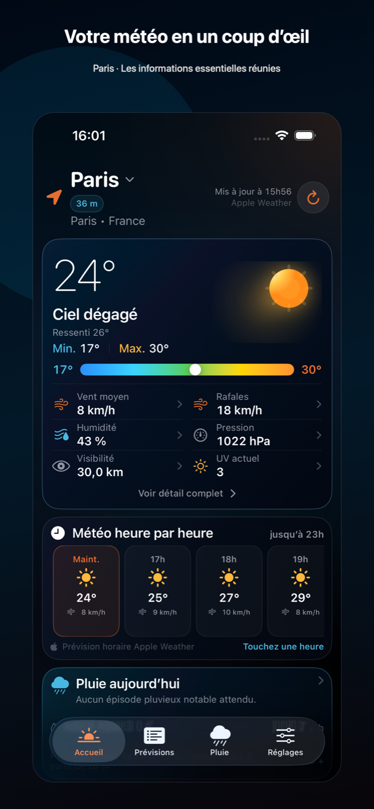
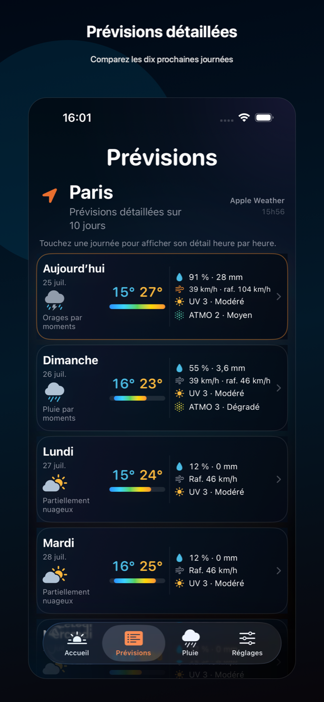
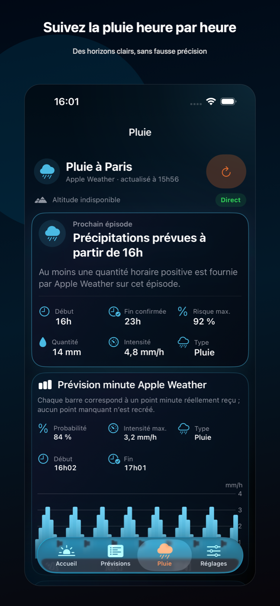
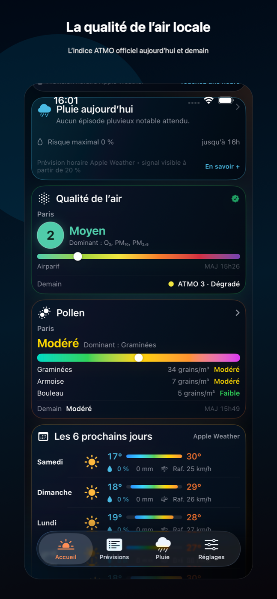
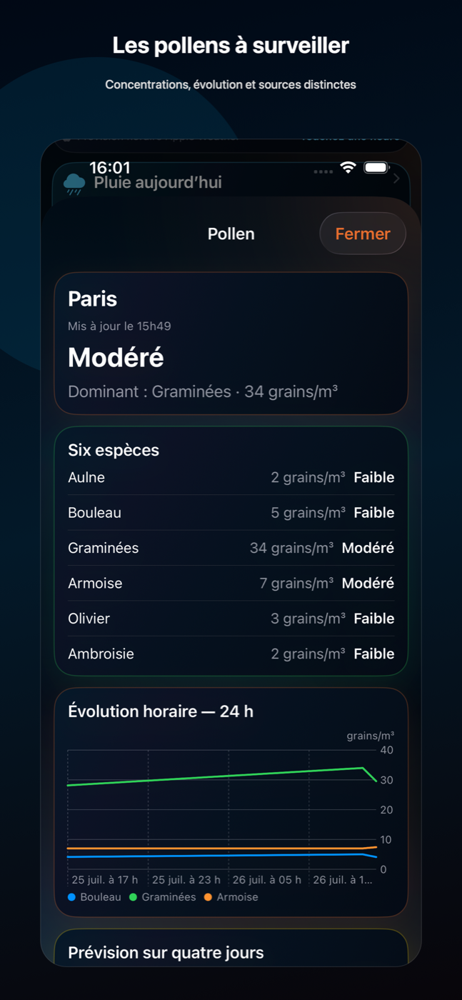
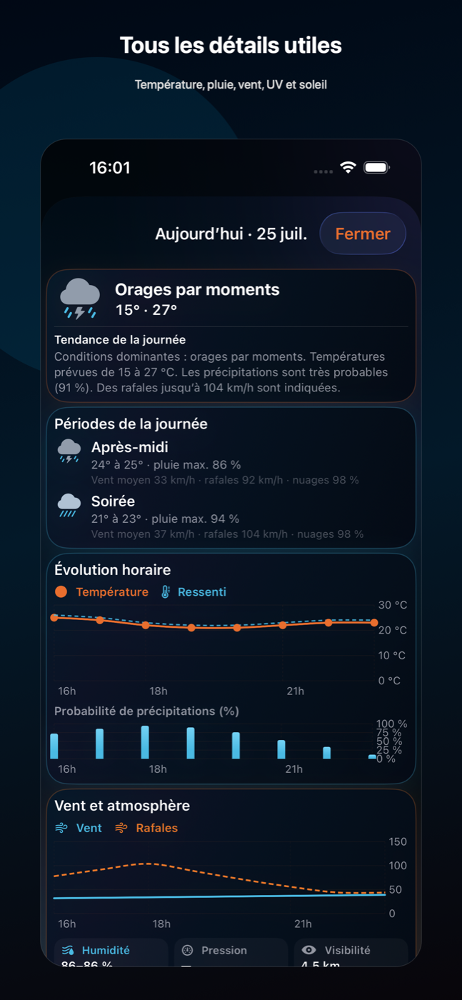
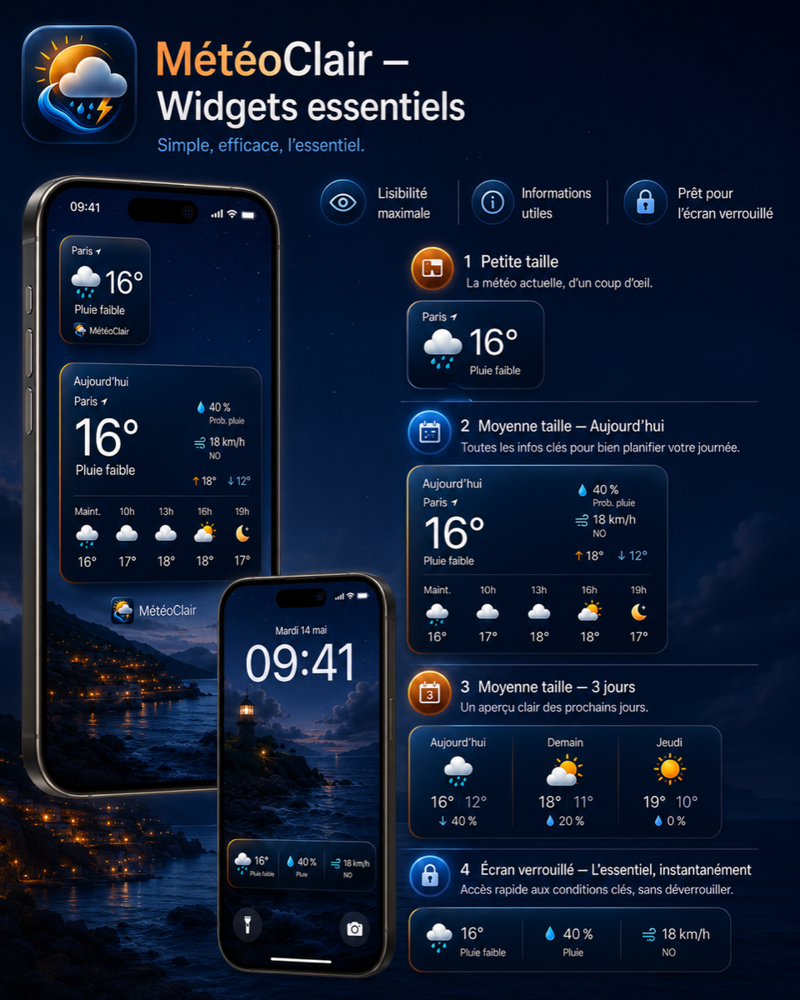

Tout comprendre en un coup d’œil
Température, ressenti, vent, rafales, humidité, pression, visibilité et indice UV réunis dans une présentation lisible.
MétéoClair réunit les conditions actuelles, les prévisions détaillées, la pluie heure par heure, la qualité de l’air et les pollens dans une interface simple à comprendre.
Gratuit · Sans compte · Sans publicité · Localisation facultative

Une interface pensée pour lire rapidement la situation, puis approfondir seulement lorsque vous en avez besoin.
Température, ressenti, vent, rafales, humidité, pression, visibilité et indice UV réunis dans une présentation lisible.
Comparez les prochaines journées et ouvrez chaque date pour accéder aux détails heure par heure.
Consultez les épisodes pluvieux, la qualité de l’air locale et les pollens à surveiller pour le lieu sélectionné.
Aucun compte, aucune publicité, aucun achat intégré et aucune mesure d’audience tierce.
Une lecture simple pour accéder rapidement aux informations qui comptent.
Les conditions actuelles et les informations essentielles sont réunies sur l’accueil.
Comparez les dix prochaines journées et ouvrez chaque date pour consulter ses détails.

Prochain épisode, risque maximal, quantité, intensité et prévision minute lorsqu’elle est disponible.

Consultez l’indice ATMO communal actuel et son évolution prévue.

Identifiez les espèces dominantes, leur niveau et leur évolution.

Recherchez une commune, utilisez votre position ou passez rapidement d’un favori à l’autre.
Température, pluie, vent, rafales, humidité, pression, visibilité, UV et évolution horaire.

Les sources, la localisation facultative et le fonctionnement des données sont expliqués directement dans l’application.
Vos prévisions essentielles directement sur l’écran d’accueil et l’écran verrouillé.

Les données météo sont fournies par Apple Weather via WeatherKit. La recherche de lieux utilise Apple Plans. La qualité de l’air repose sur les données officielles Atmo France/AASQA. Les informations de pollen utilisent Open-Meteo/CAMS lorsque cette donnée est disponible.
La localisation est facultative et utilisée uniquement pour obtenir les informations du lieu choisi. Les favoris et préférences sont stockés localement. MétéoClair ne demande aucun compte et n’intègre ni publicité ni suivi publicitaire.
Consulter la politique de confidentialitéMétéoClair est disponible gratuitement sur iPhone, sans compte et sans publicité.
Voir sur l’App Store